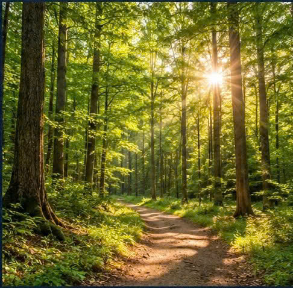
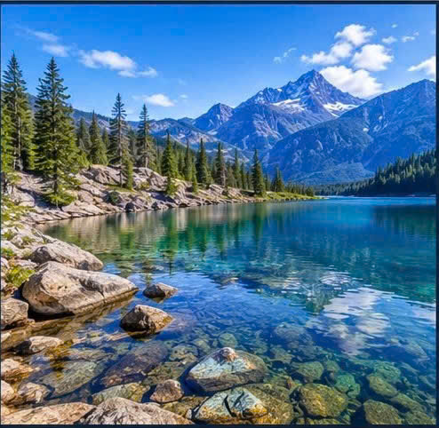
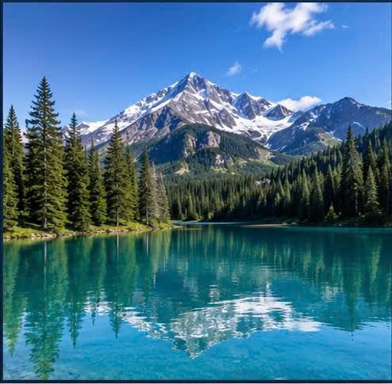

Accessible Interactive Photo Gallery
Hover over or use the Tab key to explore the images.
Hover over an image below to display here.

Mountain Lake
Ocean Sunset
Sunrise Landscape

Clear Mountain Lake

Green Forest
Snowy Mountains